Open source · MITRunPod + ComfyUI + Claude Code
remote-
comfy.
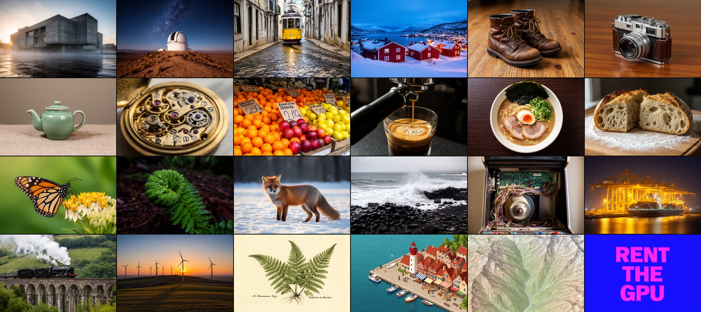
A toolkit for renting a GPU on RunPod, running ComfyUI on it, and driving it from your laptop. A watchdog on the pod shuts it down when the work stops, so a forgotten pod does not bill overnight.
- What
- It is a set of small Python and shell tools, a step-by-step playbook, and a Claude Code skill.
- Needs
- It needs Python 3.9 or newer, ssh, bash, and a RunPod account with credit.
- For
- It is written for coding agents such as Claude Code, and every step also works by hand.
- Status
- This is version 0.1. It last ran on a live pod on 15 November 2026.
1
Use it
Paste this line into Claude Code. It clones the repository, runs the offline checks and installs the skill, and it asks before it changes anything outside that folder.
Set up remote-comfy with me by following https://billmoore.ai/remote-comfy/install.md
You type your RunPod API key into your own terminal, so it never passes through the chat. Nothing is rented until you ask for a pod. To set it up by hand, follow the quickstart in the README.
2
How it works
A batch runs on the pod, next to the GPUs. Your machine only rents the pod, starts the work and pulls the results home.
- ACheck
pod_ctl.pyreads your balance and which GPUs are in stock before anything is rented. - BRent
It creates a pod on the cheapest GPU that fits the job, and re-reads the SSH address after every restart.
- CProvision
The pod installs ComfyUI, its custom nodes and the models, and stops with an error if any file is missing.
- DRender
One ComfyUI runs on each GPU, and the batch is split across them.
- ESync
Each result is copied to your machine as soon as it lands.
Fig. 2 A batch from start to finish. The watchdog runs on the pod the whole time.
$ python remote_comfy/pod_ctl.py availability --min-vram 48 GPUs >= 48GB in-stock in network-volume DCs: CA-MTL-3 A100 PCIe(80GB,Low,$2.09), H200 SXM(141GB,Low,$5.29) EU-CZ-1 RTX PRO 6000 WK(96GB,Low,$2.79) EU-RO-1 A100 PCIe(80GB,Low,$2.09), RTX PRO 6000(96GB,Low,$2.69), B200(180GB,Low,$7.99) EU-SE-1 A40(48GB,Low,$0.59) US-NC-1 RTX PRO 6000(96GB,Low,$2.69), H200 SXM(141GB,Low,$5.29) [9 more data centres]
elapsed=287s COMFY_READY PROVISION_DONE [pip resolver warning] == torch trio (pinned after custom nodes) == torch 2.14.0+cu126 | vision 0.29.1+cu126 | audio 2.11.0+cu126 OK flux1-dev-fp8.safetensors 17G OK flux1-redux-dev.safetensors 124M OK sigclip_vision_patch14_384.safetensors 817M
comfy 8188 READY comfy 8189 READY SHARDED_RUN_DONE /workspace/out: -rw-rw-rw- 1 root root 1572424 Oct 23 18:43 harbour-0_rc_00003_.png -rw-rw-rw- 1 root root 1058303 Oct 23 18:43 lighthouse-0_rc_00001_.png -rw-rw-rw- 1 root root 829508 Oct 23 18:43 lighthouse-1_rc_00002_.png /workspace/.synced.d: -rw-rw-rw- 1 root root 0 Oct 23 18:44 _workspace_out_
18:36:20 watchdog up: pod=<pod> idle-limit=10min poll=30s max=1.5h lock-ttl=20min [busy-lock lines while the batch ran] 18:43:20 lock fresh (/workspace/.busy, 99s old) - holding 18:43:50 idle 0.5min (limit 10.0) [17 more idle lines] 18:52:50 idle 9.5min (limit 10.0) 18:53:20 stock check failed: HTTP Error 403: Forbidden 18:53:20 idle 10.0min >= 10.0min | gpu stock=None | outputs synced=True 18:53:20 stock=None: a stop would likely STRAND this pod. Outputs are synced, so terminating instead — re-provisioning is cheaper than an unreachable volume.
Fig. 3 Panel A is today's stock. Panels B to D are logs from the live test on two A40 GPUs, with the pod ID removed and repeated lines cut. Three images reached the laptop 153 seconds after launch. The refused API call in panel D is the last trap in section 7, and it is fixed.
The cost guard
The watchdog runs on the pod, so it keeps working after your laptop sleeps or the agent session ends.
Before it retires an idle pod, it checks whether the GPU type is in stock and whether every output folder has reached your machine.
| When | The watchdog |
|---|---|
| ComfyUI has work queued, has not started yet, or a long job is holding the busy lock. | Waits |
ComfyUI has been idle for --idle-min, and the GPU type has high stock. | Stops The pod can be started again later. |
| It is idle, stock is low, and every output folder has been synced. | Terminates |
| It is idle, stock is low, and an output folder has not been synced. | Keeps billing It does not destroy work that exists only on the pod. |
The pod has run for --max-hours, 12 by default. | Retires it The same rules apply. |
3
Use cases
Everything in this section came from one rented L40S on 15 November 2026: one setup, five graphs, 40 jobs, 1.9 hours and $2.03 in total. The graphs and job lists are in the repository's examples folder.
A batch of images


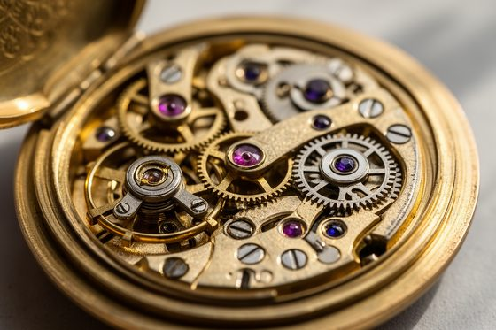
Pl. 6 Watch movement
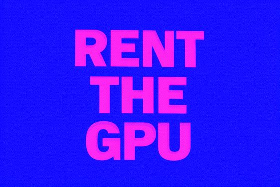
Pl. 7 PosterPl. 1–7 One job list of 24 prompts in six themes. Each 1536×1024 image took 45 seconds; the first took 208 seconds because it loaded the models. The whole batch took 21 minutes, about $0.38. Pl. 1, at the top of the page, is the full batch.
Editing an image


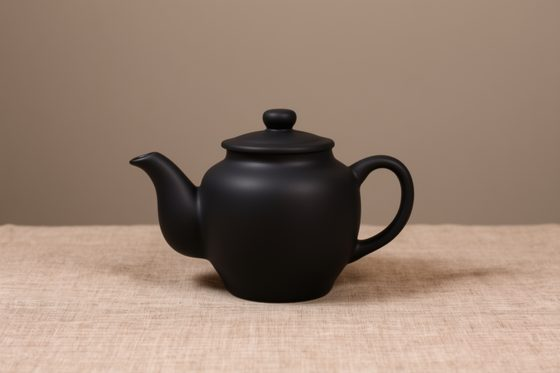
Pl. 9 Matte black
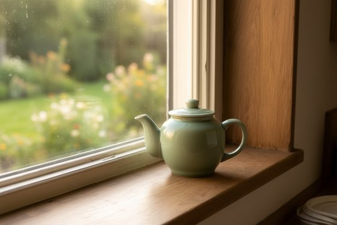
Pl. 10 Windowsill
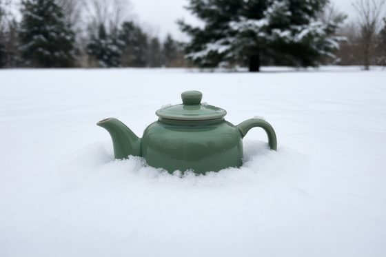
Pl. 11 In snow
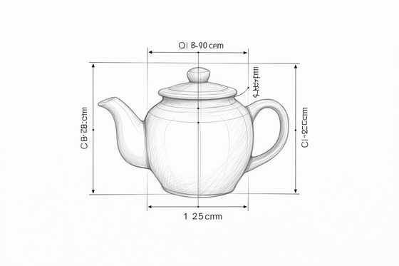
Pl. 12 Drawing
Pl. 8–14 Each edit is the source image and one sentence, such as “Change the glaze of the teapot to matte black.” An edit took 102 seconds; the first took 201. The labels on the drawing are not real words.
Image to video
Pl. 15–18 Each clip starts from one image of the batch and one sentence about the motion. A 5-second clip at 832×560 and 16 fps took about 8 minutes; the first took 9. The four clips cost about $0.60. They are shown here as animated WebP at 560 pixels wide.
Image to 3D
- Pl. 19Teapot, TRELLIS.2
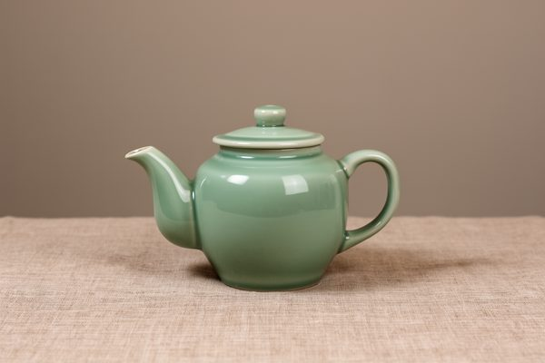
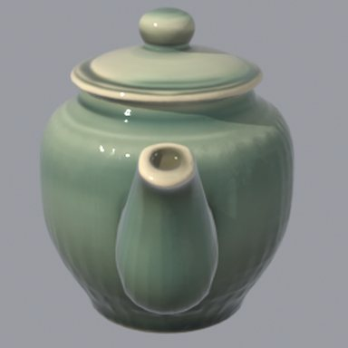
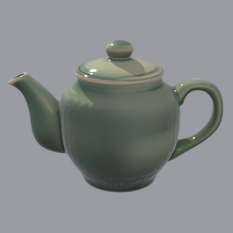
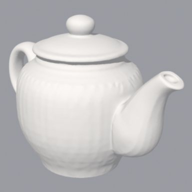
- Pl. 20Teapot, Pixal3D
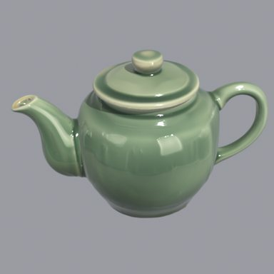
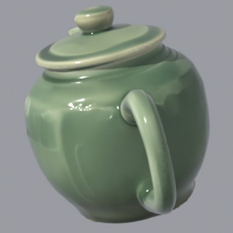
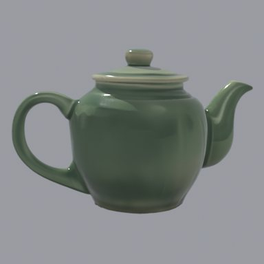
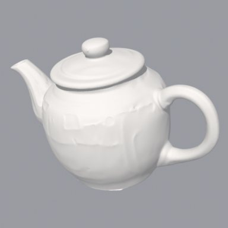
- Pl. 21Camera, TRELLIS.2
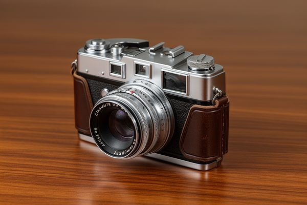
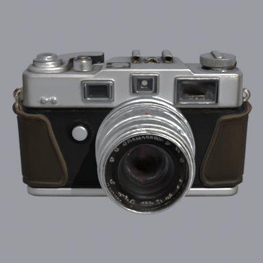
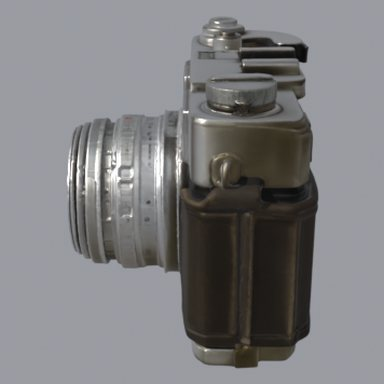
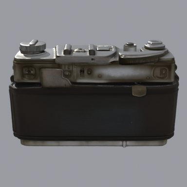
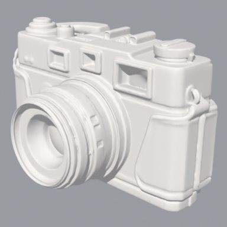
- Pl. 22Boots, TRELLIS.2
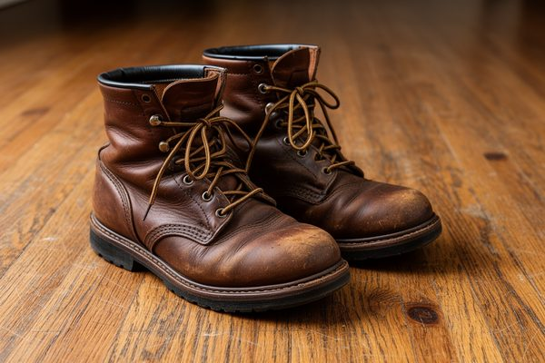
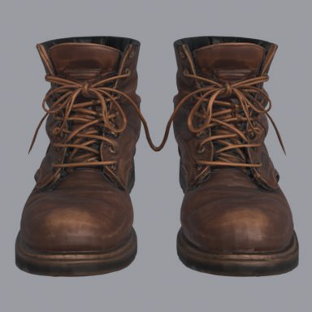
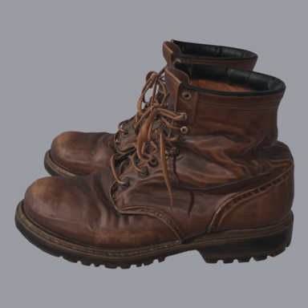
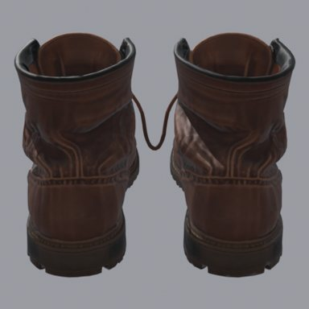
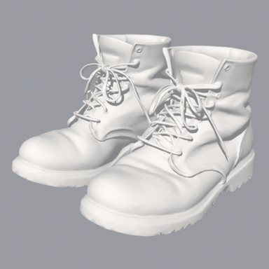
Pl. 19–22 Each mesh comes from the one image beside it, taken from the batch. TRELLIS.2 took about 170 seconds per object (the first took 534, because it loaded the models), and Pixal3D took 178 seconds on the same teapot. The grey view is the bare geometry without textures.
Cutouts and depth


Pl. 23–27 The cutout took 9 seconds, and a depth and normal pass took 3 to 15 seconds. These are the cheapest jobs on the page, and they run on the same pod as the rest.
Earlier: frames for a music video

Pl. 28 A 90-second layer of a music video, 554 frames at 1792×768, rendered with FLUX.2 [dev] and a turbo LoRA at 8 steps on two rented L40S GPUs in July 2026. A frame took about 82 seconds, and the layer cost about $11 in GPU time.
4
Tools
The tools use only the Python standard library, because a fresh pod has a bare Python.
- 01Your machine
pod_ctl.py
It creates, lists, stops, starts and terminates pods, and shows your balance and GPU stock.
- 02Pod
autostop.py
The watchdog stops or terminates the pod when ComfyUI goes idle.
- 03Pod
provision-comfyui.sh
It installs ComfyUI, custom nodes and model sets in an order that keeps torch and CUDA consistent.
- 04Pod
launch-sharded.sh
It starts one ComfyUI per GPU and splits a batch across them.
- 05Pod
hold-busy.sh
It keeps the pod awake while a long job that is not ComfyUI runs, and lets go when the job ends.
- 06Your machine
sync-outputs.sh
It pulls results home while a batch runs, checks every file, and tells the watchdog which folders are safe.
- 07Your machine
check-gpu-load.sh
It fails when one GPU samples much slower than the others, which usually means a model did not fit.
- 08Either
comfy_client.py
A small client that drives a local or a remote ComfyUI in the same way.
- 09Your machine
catalog.py
It lists current open models by task and re-checks the catalogue against Hugging Face.
5
Choosing a GPU
You pay for GPU-hours, so eight GPUs cost the same as one for the same work and finish sooner.
| Configuration | Per hour | Stock | Work per dollar |
|---|---|---|---|
| 8× A4048 GB each | $3.52 | High | Best of the four |
| 4× L40S48 GB each | $3.96 | Medium | 80% of the best |
| 4× RTX PRO 600096 GB each | $7.96 | Medium | 55%, and the fastest |
| 2× H10080 GB each | $5.98 | High | 51% |
Fig. 4 These are configurations for Wan 2.2 image-to-video at 480p, which needs 48 GB. Prices and stock are from mid-2026; pod_ctl.py availability shows today's. Speech jobs ran comfortably on one 24 GB L4 at $0.39 an hour.
The same batch on managed services
Fig. 5 This is the estimated cost of one 554-clip video batch, about 4.6 GPU-hours. fal and Replicate endpoints cannot run a custom ComfyUI graph, and Comfy.ICU does not allow installing custom nodes.
6
Model catalogue
The catalogue lists 52 open models across 12 tasks, with the exact files ComfyUI loads. It was checked against Hugging Face on 23 October 2026, and catalog.py --verify checks it again.
Open licence allows commercial useTerms commercial use has conditionsNC non-commercial onlyGB is the VRAM it needs
Text to image5
- FLUX 3 Image Klein16 GBTerms
- Qwen-Image 2.120 GBNC
- Krea 220 GBTerms
- Z-Image Turbo16 GBOpen
- MOSS-Image16 GBOpen
Image editing4
- Bria Fibo 2.016 GBNC
- Qwen-Image 2.120 GBNC
- Qwen-Image-Edit 251124 GBOpen
- FLUX.2 [klein] 4B12 GBOpen
Text to video4
- MiniMax H348 GBTerms
- LTX-2.532 GBTerms
- Wan 2.2 T2V A14B24 GBOpen
- HunyuanVideo 1.516 GBTerms
Image to video3
- MiniMax H3 I2V / FLF2V / continuation48 GBTerms
- LTX-2.5 I2V / FLF2V / DFR32 GBTerms
- Wan 2.2 I2V A14B24 GBOpen
Video to video5
- Wan Animate 224 GBOpen
- SCAIL-224 GBOpen
- LTX-2.3 22B + IC-LoRAs32 GBTerms
- Wan 2.2 VACE-Fun A14B24 GBOpen
- Netflix VOID32 GBOpen
Lip-sync and avatars5
- InfiniteTalk24 GBOpen
- LTX-2.3 ID-LoRA TalkVid32 GBTerms
- Wan 2.2 S2V 14B24 GBOpen
- HuMo 17B24 GBOpen
- LatentSync 1.612 GBTerms
Upscaling4
- SeedVR2 3B/7B16 GBOpen
- NVIDIA PiD16 GBNC
- Real-ESRGAN x4plus4 GBOpen
- RIFE v4.25 heavy / FILM frame interpolation4 GBOpen
3D4
- Pixal3D16 GBOpen
- TRELLIS.2 4B16 GBOpen
- TripoSplat8 GBOpen
- Hunyuan3D 2.112 GBTerms
Speech4
- Qwen3-TTS 12Hz 1.7B8 GBOpen
- VoxCPM28 GBOpen
- Resemble Chatterbox6 GBOpen
- Ming 3.0 TTSOpen
Music4
- MiniMax Music 316 GBTerms
- ACE-Step 1.5 XL16 GBOpen
- Stable Audio 312 GBTerms
- YuE2 3B8 GBNC
Sound effects5
- LTX-2.3 Foley V2A LoRA32 GBTerms
- HunyuanVideo-Foley12 GBTerms
- MMAudio large 44k v26 GBNC
- Stable Audio 3 small-sfx6 GBTerms
- Xiaomi ControlFoleyNC
Utilities5
- SAM 3.14 GBTerms
- Depth Anything 34 GBOpen
- BiRefNet4 GBOpen
- SDPose wholebody + RT-DETR v4 detector4 GBOpen
- MoGe 34 GBOpen
Each entry in docs/models.md says when to pick it, its licence terms and its ComfyUI workflow. Before a batch, run check_latest_models.py, because new models ship every month.
7
Traps
The repository lists 55 traps that cost time or money on a live pod, each with the rule that avoids it. Most are also an offline check that runs on every push.
- Trap2026-07-26
Pod storage is scratch.
A batch with no copy-back lost 200 to 400 frames and about $22 when the pod was reclaimed, so results now sync as they land.
- Trap2026-07-25
Stopping a pod can strand it.
A restart needs a free GPU on the same host, so the watchdog stops a pod only when its GPU type has high stock.
- Trap2026-07-26
Only /workspace survives a restart.
Every pip and apt install is gone after a stop and start, so provisioning runs its dependency step again.
- Trap2026-07-27
A busy flag outlived its job.
It held an idle H100 for three hours, so the lock is now a heartbeat that the watchdog ignores once it goes stale.
- Trap2026-07-26
A leftover process halved a two-GPU render.
One card took 494 seconds a frame instead of 127, so
check-gpu-load.shcompares sampling speed across GPUs. - Trap2026-10-23
The watchdog could not act, then exited.
Its calls were refused and the pod kept billing, so it now retries every poll and never exits while the pod can bill.
8
Status and limits
Status
- The full run was last tested live on 15 November 2026: setup and 40 jobs across five graphs on one L40S, in 1.9 hours, for $2.03.
- On 23 October 2026 the watchdog terminated an idle L4 pod by itself, about a minute after it went idle.
- The offline checks run on Python 3.9 and 3.12 in CI, and need no network, GPU or API key.
Limits
- It works with RunPod only.
- This rents real hardware with real money. You are responsible for your RunPod bill.
- The watchdog reads the queue of the first ComfyUI only. The launcher keeps the pod busy while any GPU still has work.
- docs/open-questions.md lists what has not been proven yet.